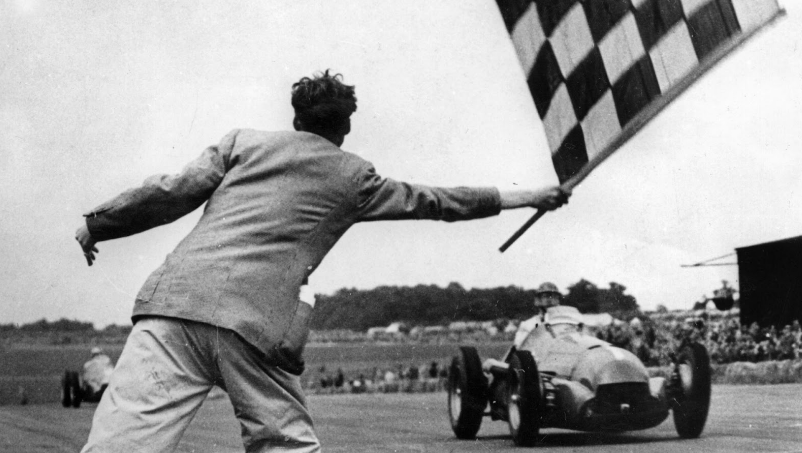

Formula 1 motor-lehiaketarik garrantzitsuena eta ospetsuena da munduan. Hala ere, ez zuen jatorri erraza izan, Bigarren Mundu Gerraren ondorioz. Automobilismoaren historia XIX.mendearen amaierako lehen lasterketen sorreratik gaur egunera artekoa da. Baina, esan bezala, hurrengo mendearen erdialdera arte ez zen hasi gaur egun F1 izenez ezagutzen duguna, 1950an. |
 |
Formularen 1 hasiera 1950ean hasi zen, Automobilaren Nazioarteko Federazioak (FIA) Munduko Pilotu Txapelketa bat sortzeko hainbat Sari Nazional, Parisen batuko zituela iragarri zuenean. Ferrari, Alfa Romeo eta Maserati ziren garai hartan elkarrekin leihatzen ziren taldeak, eta lehen Sari Nagusia urte hartako maiatzaren 13an egin zen, Silverstoneko zirkuituan. Giuseppe Farina italiarra izan zen lehen irabazlea,geroago F1eko lehen Txapeldun izan zena.
Lehen Sari Nagusiak 1894an Frantzian bertan sortutako automobil-lasterketetan dute jatorria. Orduan banakako ekitaldiak izaten ziren, loturarik gabeak eta lurrezko bideetan, ia inolako araurik gabe. 1927tik 1934ra arte, proben kopurua hamazortzi izatera iritsi zen, Bigarren Mundu Gerraren aurreko maximoa, hazkundea geldiarazi zuena. Gerra amaitu eta berehala, lau lasterketa baino ez ziren izan, baina Grand Prixeko lehiaketetarako arau batzuk ezarri ziren, autoak zein pilotoak bete behar zituztenak. Formula deitu ziren, baina 1947. urtera arte ez ziren zehaztu, AIACR (Association Internationale des Automobile Clubs Reconnus) zaharra berrantolatu eta FIA deitu zenean.